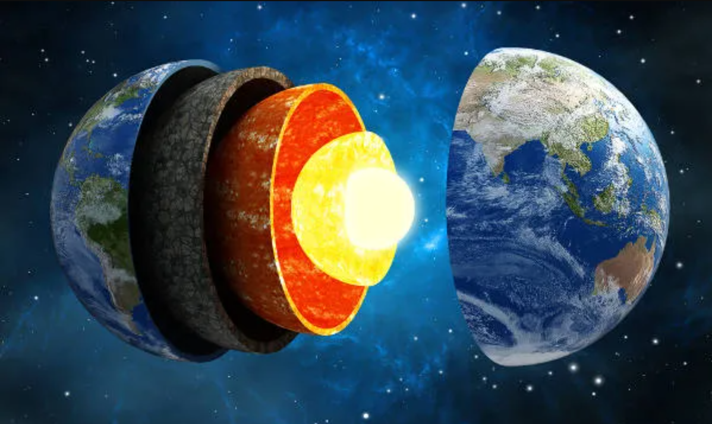
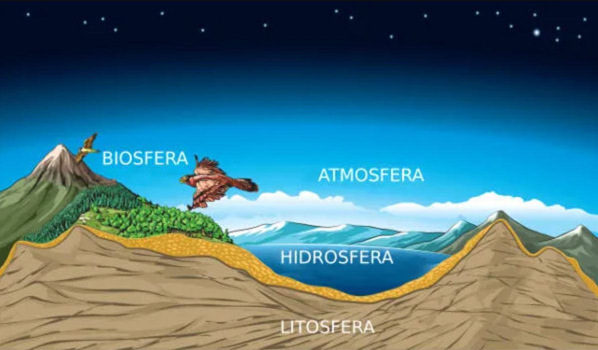

O Planeta Terra é um dos planetas que fazem parte do Sistema Solar e é o terceiro planeta mais próximo do Sol.
A sua formação ocorreu há bilhões de anos, assim como a existência de vida aqui .
Algumas teorias explicam sua origem, como a teoria da nebulosa solar.
A Terra é considerada um planeta telúrico e possui sua estrutura interna dividida em: crosta terrestre, manto e núcleo.
Além da estrutura interna, há também a externa que corresponde à litosfera, hidrosfera, biosfera e atmosfera,
que são o que oferece as condições favoráveis para a existência de vida aqui.
Características do Planeta Terra e sua formação
O Planeta Terra, também conhecido como mundo, planeta azul ou planeta água, tem cerca de 70% da sua superfície coberta por água.
A existência dessa substância em seu estado líquido, juntamente à presença do oxigênio e a capacidade de reciclar gás carbônico fazem da Terra
um planeta com características únicas.
Apesar das grandes descobertas astronômicas, não há ainda como afirmar que exista um planeta com características tão peculiares capaz de propiciar
a existência dos seres vivos. E a Terra não é “viva” apenas sob a ótica biológica, mas também sob a ótica atmosférica, geológica e física, uma vez que
tudo isso está em constante transformação.
Quanto à sua formação, estima-se ocorreu há aproximadamente 4,56 bilhões de anos. A teoria mais aceita atualmente sobre a origem do Sistema Solar,
e consequentemente do nosso planeta, é a teoria da nebulosa solar, proposta em 1644 por René Descartes, reformulada em 1775 por Immanuel Kant e, posteriormente,
em 1796 por Pierre-Simon de Laplace.
Essa teoria acredita que os planetas do Sistema Solar, entre eles o nosso, formaram-se a partir do colapso de uma nuvem que estava rotacionando em alta velocidade
e contraiu-se. Acredita-se que o Sol foi formado a partir da concentração central da nuvem, e os planetas a partir das partículas remanescentes.
Algumas teorias dizem que a vida surgiu na Terra um bilhão de anos após a sua formação.
Além de apresentar condições favoráveis à existência de vida, a Terra também possui recursos naturais (renováveis e não renováveis) que propiciam a manutenção dessa existência.
É por meio desses recursos que os seres vivos mantêm-se, pois são retirados recursos minerais, fontes de energia, alimento, entre outros. Em meio à história evolutiva,
o homem adaptou-se às condições apresentadas pela Terra e aprimorou suas habilidades,
retirando dela aquilo que era necessário à sua sobrevivência de forma cada vez mais precisa.
Dados Gerais do Planeta Terra
| Descrição |
Valor |
| Diâmetro |
Aproximadamente 12.756,2 km |
| Área da Superfície |
Aproximadamente 510.072.000 km² |
| Massa |
5,9736 x 10^24 kg |
| Distância do Sol |
Cerca de 149.600.000 km |
| Satélite Natural |
1 (Lua) |
| Período de Rotação |
23 horas 56 minutos e 4 segundos |
| Período de Translação |
365 dias 5 horas e 48 minutos |
| Temperatura Média |
14°C |
| População Terrestre |
Aproximadamente 7.722.522.000 habitantes |
Como o planeta Terra é dividido?
O planeta Terra é um dos quatro planetas do Sistema Solar de composição rochosa, conhecidos também como telúricos ou terrestres.
Esses planetas rochosos possuem uma estrutura interna semelhante dividida em:

Crosta terrestre
A crosta é também conhecida como litosfera e corresponde à camada mais externa da Terra, formada por rochas e minerais, como silício, magnésio, ferro e alumínio.
Possui em média 10 quilômetros sob os oceanos e entre 25 e 100 quilômetros sob os continentes.
Nela, são encontrados os continentes, as ilhas e o fundo oceânico. Além disso, observa-se que ela não é uma camada inteiriça,
pois há divisões que formam grandes blocos rochosos conhecidos como placas tectônicas, que se movimentam e podem provocar tremores na superfície terrestre.
Manto
O manto localiza-se entre a crosta terrestre e o núcleo. É conhecido como camada intermediária, que se divide em manto superior e manto inferior.
Ele pode apresentar profundidade de cerca de 30 a 2900 km abaixo da crosta e, ao contrário dela, o manto não é sólido.
Com temperatura média de até 2.000°C, essa camada é composta por material magmático (em estado pastoso) composto principalmente por ferro, magnésio e silício.
A movimentação do magma, conhecida como correntes de convecção, provoca a movimentação dos blocos rochosos que compõem a crosta terrestre.
Núcleo
O núcleo é a camada mais interna da Terra e divide-se em núcleo externo e núcleo interno.
É também a camada que apresenta a maior temperatura, que, segundo cientistas, pode alcançar 6.000°C.
Ele é formado por ferro, silício, níquel e, apesar das altas temperaturas que deveriam manter esses compostos no estado líquido,
o núcleo apresenta elevada pressão, que acaba por agrupar essas substâncias, mantendo-as sólidas.
Estrutura externa da Terra
O que diz respeito à parte externa do planeta Terra, há também uma classificação de sua estrutura.

- Atmosfera
Corresponde a uma camada gasosa que envolve todo o Planeta Terra. Ela é formada por gases mantidos pela gravidade,
cuja principal função é proteger o planeta da radiação solar emitida, filtrando-a, além manter a temperatura média da Terra,
fazendo com que não haja uma grande amplitude térmica.
A atmosfera também impede que a Terra seja atingida por fragmentos rochosos. Essa camada possui a divisão das subcamadas:
troposfera, estratosfera, mesosfera, termosfera, exosfera.
- Hidrosfera
Corresponde à camada que compreende os corpos hídricos do Planeta Terra. Abrange não só os oceanos, mas também os mares, os rios, os lagos e as águas subterrâneas.
- Biosfera
Corresponde ao conjunto de ecossistemas que compreendem a Terra. Basicamente, diz respeito aos grupos de seres vivos que a habitam.
Esses ecossistemas encontram-se desde os pontos mais elevados do planeta até as partes do fundo oceânico.
Planeta Terra no Universo
A Terra possui o maior satélite natural do Sistema Solar, a Lua.
A Terra é um dos oito planetas que compõem o Sistema Solar, localizado na Via Láctea.
É considerado o maior em diâmetro e densidade dentre os planetas rochosos (Mercúrio, Vênus, Terra e Marte).
Esse planeta não é estático, portanto, realiza diversos movimentos, sendo os principais: o movimento de rotação,
que consiste no movimento ao redor do seu próprio eixo, originando o dia e a noite, e o movimento de translação, realizado ao redor do Sol,
dando origem ao ano civil e às estações do ano.
A Terra tem um único eu maior satélite natural do Sistema Solar, a Lua, que influencia fortemente nas marés,
em virtude da força gravitacional que existe entre esses astros. Por conta do posicionamento desse satélite em relação ao nosso planeta e ao Sol,
é possível observar as quatro fases lunares (nova, cheia, minguante e crescente).